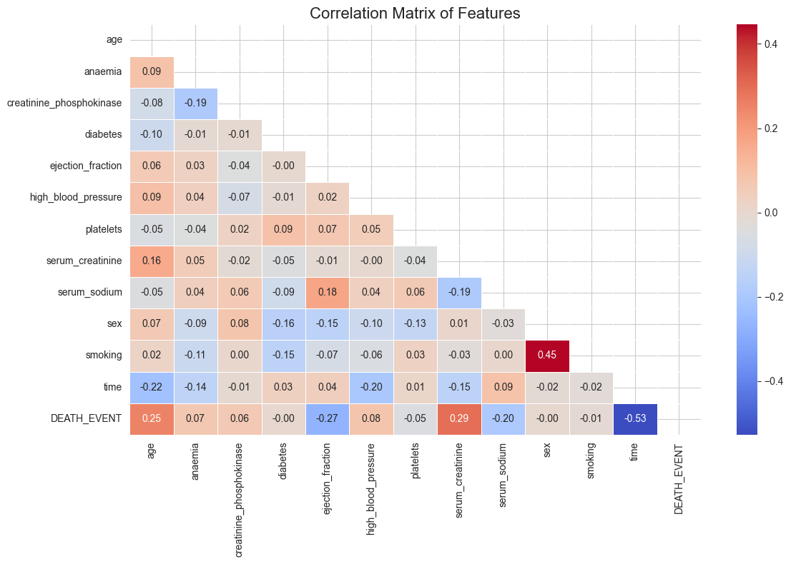
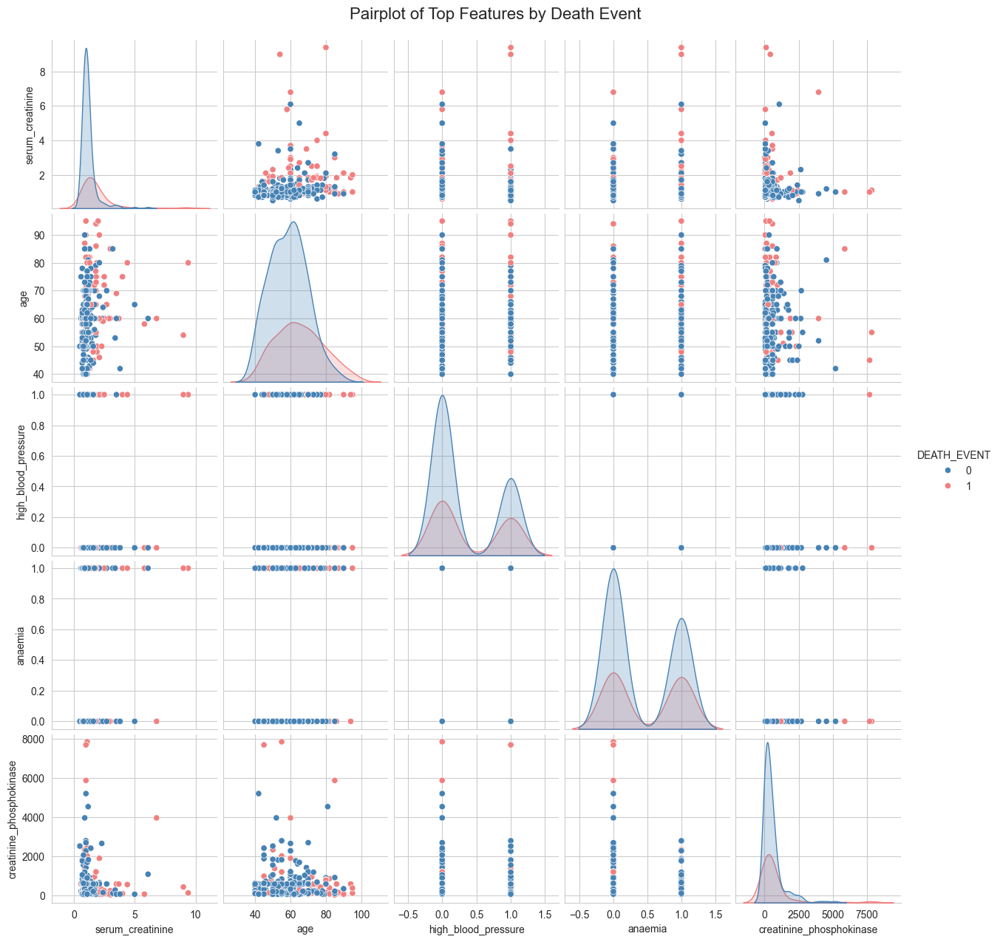

Turning data into actionable insights
Cardiovascular diseases remain one of the leading causes of death worldwide,
with heart failure contributing significantly to mortality rates among affected patients.
Early identification of patients at higher risk of adverse outcomes is essential for improving clinical
decision-making and patient management.
This project explores a heart failure clinical records dataset to identify the key factors associated
with patient survival and mortality. Using exploratory data analysis (EDA), statistical techniques,
and data visualization, the study examines the relationships between demographic characteristics,
laboratory measurements, and clinical indicators to determine which variables have the strongest
influence on patient outcomes.
The analysis includes data cleaning, descriptive statistics, correlation analysis, and visual exploration
through pair plots and heatmaps. Particular attention is given to important clinical variables such as age,
serum creatinine, ejection fraction, serum sodium, and follow-up time. These analyses help uncover patterns
and relationships that may contribute to increased mortality risk among heart failure patients.
The findings provide insights into the clinical factors most strongly associated with survival outcomes
and demonstrate how data analytics can support evidence-based healthcare decision-making.
This project highlights the application of data science techniques in public health and clinical research,
transforming healthcare data into actionable knowledge that can inform patient care and risk assessment
strategies.
This correlation matrix shows the strength and direction of the linear relationships between the
variables in the heart failure dataset. Correlation coefficients range from -1 to +1:

This pair plot is comparing the distributions and relationships among the top predictors in a
heart failure dataset, with points colored by DEATH_EVENT:

Higher serum creatinine levels are associated with increased mortality risk, as indicated by the clustering of red points at higher creatinine values. This suggests that impaired kidney function may be a significant risk factor for heart failure patients.
Elevated serum creatinine indicates impaired kidney function, which is associated with a higher risk of death.
As patients get older, their risk of mortality increases. The pair plot shows a concentration of red points (deaths) among older individuals.
Older patients appear to have a higher likelihood of experiencing a death event.
The pair plot revealed that age and serum creatinine were the strongest visual predictors of mortality among heart failure patients. Patients who experienced a death event were generally older and exhibited higher serum creatinine levels, suggesting that advanced age and impaired kidney function are important risk factors. Creatinine phosphokinase showed substantial variability and several extreme outliers, but its relationship with mortality was less distinct. In contrast, high blood pressure and anaemia demonstrated considerable overlap between survivors and non-survivors, indicating weaker individual predictive power. Overall, the visualization suggests that age and renal function are key factors associated with patient survival outcomes.
In summary, this analysis highlights the importance of serum creatinine levels and age as key predictors of mortality in heart failure patients. These insights can inform clinical decision-making and risk assessment strategies.